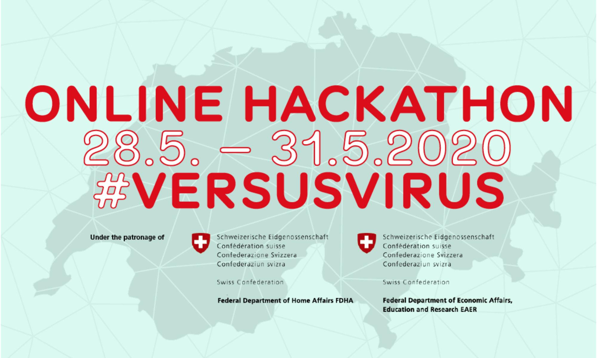

Ventures
I co-develop projects advise organisations to drive a society-cented technological transformation.

Rate Patriarchy Billboard: A billboard applying the rating system to patriarchal structures.

Poisoning Reality: A data poisoning live experiment to influence AI datasets.

Responsible AI Check: A context-specific and diversity-conscious AI impact assessment.

AI Escape Games: A playful and interactive training programme focused on ethical AI.

OK Klima: A nationwide platform and community to evaluate and participate in local climate policy.

Prototype Fund: A support program for interdisciplinary teams that work on open-source public interest tech.

Data Café: An awareness campaign about the value of data in modern society to strengthen data literacy.

Arui: An online start-up for sustainable dried flowers, sold to a family-owned organic farming business.

VersusVirus: A national online Hackathon and incubation program to cope with the Covid-19 pandemic.

Social Business Club: An association at the University of St. Gallen that raises awareness for social entrepreneurship.

Digital Utopia Workshops: A workshop series to nurture the imagination of positive digital futures.